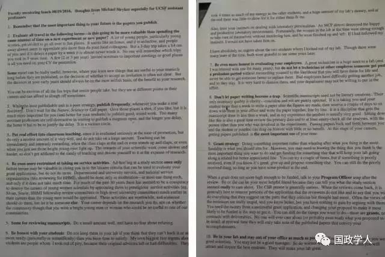

收录于合集

Michael Stryker 是UCSF 桑德勒神经病学中心的一位大牛教授，在一次午餐会上，他给年轻的学者分享了成为学术大牛的11条军规。这其中有些观点虽然与世俗不同，但却字字珠玑，句句箴言，直击我等小年轻的内心。
我在朋友圈和公众号（ID:MrGutService）看到有人分享，花了近1个多小时把照片里的英文原文敲出来，再对照MrGutServiced的中文翻译分享出来，大家且细细品读。

- ** 牢牢记住：对你的未来最重要的事是你发表的文章。**
Remember that the most important thing to your future is the papers you publish.
- ** 按下面这个原则来评估所有出差行程——这是否比花同样的时间在一个新实验或新文章上更有价值？**
Evaluate all travel in the following terms: is this going to be more valuable than spending the same amount of time on a new experiment or new paper?
A lot of young people, particularly young women, get invited to fun places. It seems like an honor, and it is seductive, and people away always seem to appreciate you more that do your local colleagues. But a 3-day trip takes a lot out of you, and if it delays a paper by a week it is almost never worth it. No one will remember which trips you took in 5 years time. A few (2 or 3 per year) invited seminars to important meetings or good places is all you need on your CV for promotion
Some travel can be really useful, however, when you learn new things that are useful to your research long before they are published, so the decision of whether to accept an invitation is often not clear.But the decision in your early years should always be on the most selfish basis, of the benefit to your research careers and can afford to slough off sometimes.
You can be envious of all the fun that senior people take, but they are at different points in their careers and can afford to slough off sometimes.
很多年轻人，特别是年轻女性，受邀去各种好玩的地方。这看上去很荣耀，也十分诱人，外面的人也总是比你的同事们更欣赏你。但是为期3天的旅程会占用你的时间，要是这耽误了写文章就完全不值当了。没人会记得你在5年里去过什么地方。在推荐自己的简历上列出少数几次（2-3次/年）重要会议的获邀报告就足够了。
然而， 某些行程 可能确实有用，你能在那里掌握对你的研究有启发且远早于被发表的时间点的新信息，所以是否接受一次邀请通常难以决定。但是，在你研究生涯早期的决定都应该总是基于“最自私”的出发点——是否有益于你的研究。
你可以羡慕那些资深人士参加的有趣行程，但是他们处于自身工作的不同时间节点，而且有时候经得起把工作放弃的代价。
- 虽然发一些小文章不是一个好策略，但任何时候，当你有一个真正的发现，都要 频繁地去发表文章 。
While the least publishable unit is a poor strategy, publish frequently, whenever you make a real discovery.
Don’t wait for the Nature , Science or Cell paper. Give those places a shot, if you like, but it is much more important for you (and better for your students) to publish good, sound work. Too many assistant professors are self- destructive in waiting to publish a magnum opus, and the longer you delay, the better it has to be just if the delay. It is a vicious circle.
不要为了 Nature、 Science 或 Cell 文章而等待。如果你愿意，也可以一试，但是对于你和学生来说，更重要的是能发表出好的、完整的文章。太多的助理教授为了等着发表一篇大作而耽误前程，而且折腾的时间越长，文章就需要更完美。这是个恶性循环。
- ** 在课堂教学上下功夫 ，因为这也会在晋升时被重点评估，但你一定只能在此上面付出 适度 而不是大量的精力。当下课时学生们为你起立鼓掌，甚至当你看见这些年轻人的眼睛因你而闪亮时，教学会带给你迅速而强烈的回报。但科研工作中的回报来得更漫长更艰辛，所以不要沉迷于教学带来的甜头而忘了科研的重要性。**
Putting real effort into classroom teaching since it is evaluated seriously at the time of promotion, but do only a modest amount of it very well, and not take on a large amount. Teaching can be immediately and intensely rewarding, when the class claps at the end or even stands up and claps, or even when you just see those bright young eyes light up. The rewards of your scientific work come slower and harder, so don’t get addicted to the candy of teaching and devote yourself to it at the expense of research.
- ** 限制再限制参加行政或社会服务性工作 。**
Be even more restrained at taking on service activities.
Ad-hoc’ing at a study section once only before tenure may be valuable in cluing you in to the bizarre criteria that can be used to evaluate your grant applications, but do not do more. Departmental and university service, and national service organizations (like reviewing for HHMI), should be done only in moderation at most one thing each, and only if it does not take much time. For much of the past 30 years there has seemed to be a conspiracy to destroy the careers than the young men would be appointed. These activities are worthwhile, and someone should do them, but let it be someone else. Your career depends on the research you do, not on whether the community though that you were a bright young man or woman who could be so useful to one of your communities.
在获评终身教授之前，在项目评审组里 只待一次 或许是值得的，这可能会让你掌握对评估你的基金申请有用的奇葩标准。只能适度参与院系、学校和全国性机构（如HHMI）的服务性工作，最多参与一项，且不能占用太多时间。在过去30年的大部分时间里，相比年轻男性，年轻女科学家更早在她们的工作中被指派参与Sloan、Searle、HHMI研究员评审委员会或高级别大学委员会等组织的服务性工作，这似乎是摧毁她们研究工作的陷阱。这些活动是有价值的， 需要有人去做，但 让别人去做 。你的职业生涯依靠的是你做的研究，并不是靠任何委员会觉得你是一个聪明有用的年轻人。
- ** 评审稿件也是如此 。少做一点这样的事情，不要害怕拒绝别人。**
Same for reviewing manuscripts. Do a small amount well, and have no fear about refusing.
- ** 坦诚对待你的学生 。**
Be honest with your student.
Do not keep them in your lab if you think that they can’t hack it or are more needy (personally or scientifically) than you have time to satisfy. My own biggest two regrets about students are people whom I took out of pity, because their original advisors left or had difficulties. They took 4 times as much of my energy as the other students, ad h huge amount of my lab’s money, and at the end there was little to show for it for either them or me.
Also, trust your instincts on dealing with laboratory personalities. An MCP almost destroyed the happy and productive laboratory environment. Fortunately, the women in the lab at the time were strong enough to take care of themselves without murdering him, and he soon finished up and left. I had followed my instincts, I would not have taken him on.
I have absolutely no regrets about the two students whom I kicked out of my lab. Though they were many tears at that time, both were grateful to me some years later.
如果你觉得某些学生不能容忍，或者你需要花更多时间才能满足他们个人或科学上的要求，就不要把他们留在你的实验室里。关于学生，我自己最后悔的两件事是出于同情心而收留了离开先前的导师或有其他困难的学生。我在他们身上花了相当于别的学生身上4倍的精力，以及一大笔实验室经费，但不管是对他们或是对我，到最后都成果甚微。
同时，要相信你在处理实验室人际关系上的直觉。一个大男子主义的人几乎曾毁掉我们实验室的快乐和高产氛围。所幸那时实验室里的女性足够强大，能控制好自己而没有试图“干掉”他，他很快也就结束研究离开了。如果我能遵从自己的直觉，就不会收这个人。
我完全不后悔把两个学生请出我的实验室。尽管他们当时声泪俱下，但多年以后两人都很感激我。
- ** 在评估雇员时，要更坦诚。**
Be even more honest in evaluating your employees.
A great technician is a huge asset to lab (and I was blessed with one for many years), but do not let a technician or other employee someone get past a probation period without reconciling yourself to the likelihood that you will have them for life and never be able to get someone better to replace them. Bad employees have difficulties getting another job and so they stay. It is very hard to dismiss them, and your department may not be willing to put in the effort.
一位出色的技术员是实验室的财富（我很庆幸能与这样的一个人共事了很多年），但是如果你不能确信自己能与他们共事一辈子，以及再也找不到更好的人来取代他们，就不要让技术员或其他雇员通过试用期。不好的员工很难找到其他工作，所以他们会留下来。要解雇他们很难，而且你所在的院系可能也不会愿意付出努力帮忙。
- ** 别让写文章变成一个陷阱。**
Don’t let paper writing become a trap.
Scientific manuscripts need note be literary creations. Their only necessary quality is clarity-concision and wit are purely optional. If it taking you and your student more than a week to write a paper after the figures are made, then reserve a couple of days to sit down with them in your office and write the paper together, line by line. It is a discipline that gets the manuscript done in less than a week, and in my experience, the product is usually very good. Sitting down like this is also a great time view primary data and at least sanity-check all the analyses with the person other than you who was involved the experiments. Passing papers back and forth between you and the student or postdoc can drag on forever with little or no benefit. All this stage of your career, getting published is the most important use of your time.
科学文章不是文学创作。它们唯一 必要的品质是清晰 ，简洁和机智只是可选项。如果配图都已经准备好了，你和学生还要花不止一周的时间来写一篇文章，不如腾出几天在办公室里坐下来和学生一起逐字逐行来写这篇文章。 在一周内写完文稿是一条铁律 ，以我的经验来看成品往往不错。这样坐在一起写文章，也能和参与实验的其他人一起评估最初的数据，至少完整检查一遍所有分析。
让文章在你和学生或博士后之间传来传去只会拖延时间，没有太大甚至没有任何好处。在你职业生涯的这一阶段， 让文章得以发表，是你的时间最重要的用途 。
- ** 基金申请策略**
Grant strategy
Doing something important rather than whoring after what you thing is the most fundable is what you should aim for.However, you may need to bootleg the thing that you think is the most important thing you want to do and get funding for something else that will keep your lab going along a related but better appreciated line. You can try a couple of times, but if something is poorly received, even if you know it is great, give up and propose something else. You can still do the poorly received thing, so long as you have some product at the end.
When a grant does not score high enough to be funded, talk to your Program Officer as soon as possible after the review. He or she can be your most helpful friend because they can tell you what the study section seemed really to care about. The SCR person is generally useless. When the review come back, it is generally best to remove portions of the application that reviewers do not like and to say that you will do everything that they suggest on the parts that they criticize but thought had merit. Often the review of the reviewer are really stupid, and you know better, but you have nothing to gain by arguing with them. You need the money from a successful grant application, and changing your proposal to make it most likely to be funded is the way to get it. You can still do something you want to do-These are grant, no contracts with deliverables. No one will ever care about (or probably even read) what you propose to do in detail; at renewal time they will only take note of published papers that convey your accomplishments.
在你的计划中，可能考虑做一些重要的事而不去考虑哪些事情最容易得到资助。然而，你可能要偷偷做你认为最重要最想做的事，而得到资助的往往是另外与之相关但是更吸引人能 让你的实验室运作下去 的事。
你可以多试几次，但即便你知道它是很好的主意，却很难被接受，放弃它并想点别的着。你仍然可以干很难被接受的事情，只要最终你能得到成果。
当一项基金申请没有被评到足够高的分数以获得资助，在评审意见回来后尽快与你们的项目官员交谈。他们会告诉你评审组的真实意图，此时他/她是你最有用的朋友。而CSR的人通常没什么用处。
评审意见回来以后，通常最好去掉评委们不喜欢的部分，并承诺你会做好他们有批判但认为还是有闪光的的部分。通常 评委们的观点会很愚蠢 ，你懂得更多， 但与之争吵你得不到任何好处 。
你需要从一份成功的基金申请中获得经费，将你的想法修改到最可能被资助的状态是得到资助的最佳途径。 你仍然可以做你想做的事 ，这是研究经费，不是合同交付。没有人会真正关心（甚至阅读过）你计划要做的具体内容，在再次评审的时间点，他们只会留意 发表出去的能展现你的成绩的文章 。
- ** 尽可能多地待在实验室，别窝在办公室。**
Be in your lab and stay out of your office.
You were hired because you were good scientists. You may not a good manager. So do science with your own hands, and you will attract and inspire the best student. They will make your lab great.
你们被雇用是因为你们是优秀的科学家。你可能不是一个好的管理者。所以，用你的双手做科学，你会吸引并激励优秀的学生。他们会让你的实验室变得不凡。
来源：订阅号——书圈
筛选：汪乐乐
编辑：鑫辰
声 明
国政学人微信公众平台系非盈利学术平台。建立初衷是方便广大学人进行学术研究，促进学术的传播和交流，不做任何商业用途。如有任何权利问题，请直接与我们联系。
您可能还会喜欢：